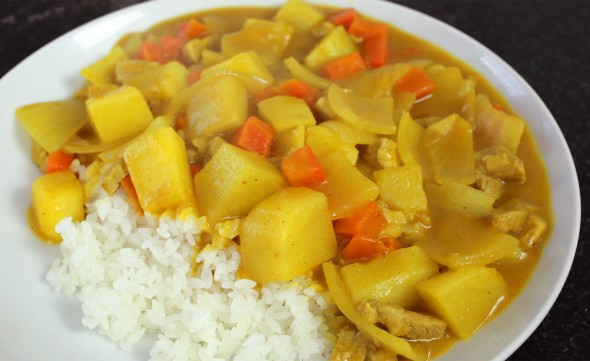

Korean Curry Rice

Simple and tastful curry that will melt in your mouth.
It's not your traditional curry. It won't overwhelm you with spices.
This is Korean Curry, often served with rice. A simple, yet delicious mix of potatoes, onions, and carrots.
My mouth waters just thinking about it.
Ingredients
- 2 tbsp unsalted butter
- 1/2 pound pork loin (or beef or chicken)
- 2 medium potatoes (about 10-12oz), peeled and cut into 3/4 inch cubes
- 1 large onion (about 8oz) cut into 3/4 inch cubes
- 1 medium carrot (about 3oz), peeled and cut into 1/4 inch cubes
- 3 cups water
- 1 package of Korean Curry Powder
- White fluffy rice
Instructions
- In a bowl, mix the curry powder with 1/2 cup of water. Set aside.
- Heat the butter in a large, heavy pot over MED-HIGH heat. When it starts to melt, add pork and stir for a few minutes until pork is no longer pink.
- Add potatoes and stir for a few more minutes until potatoes are semi-translucent.
- Add carrot and onion and stir for a few more minutes.
- Add 2 1/2 cups water, stir, cover, and turn down the heat to MED. Cook for 10-12 minutes until potatoes are tender.
- Add the curry and water mixture to the pot. Stir well for a few minutes until the sauce is creamy and thick. Remove from heat.
- Ladle the curry sauce on top of fresh rice and serve (optional with kimchi).